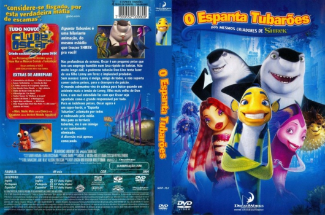
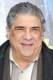
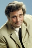

Outro Título:Shark Tale
País:United States, 90 minutos
Idiomas falados:Espanhol, Inglês, Português
Gênero(s):Animação, Ação, Comédia, Família
Diretor(s):Bibo Bergeron, Rob Letterman, Vicky Jenson
Escritor(es):Rob Letterman, Michael J. Wilson, Lona Williams
Codec:MPEG-2 (DVD)
Número: 5843


Certificado:L
Sinopse:
Oscar é um pequeno peixe que tem sonhos grandes, que se torna um herói involuntário após pregar uma grande mentira. Após ser perseguido pelo filho do tubarão-chefe, Oscar presencia sua morte. Querendo bancar o herói, ele assume a autoria do assassinato e, com isso, se torna uma grande celebridade no mundo aquático. Porém a situação se complica quando ele é designado para repetir a façanha, eliminando outros tubarões.
Elenco:  
Tipo de mídia: DVD5,
Legendas: Espanhol, Inglês, Português, Sem Legendas
Alugado: Não
Tela: Anamorphic Widescreen